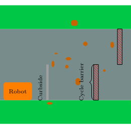

A Comparison of Prompt Engineering Techniques for Task Planning and Execution in Service Robotics
Bode, Jonas;
Pätzold, Bastian;
Memmesheimer, Raphael;
Behnke, Sven
23nd IEEE-RAS International Conference on Humanoid Robots, Humanoids (accepted for publication)
IEEE
(2024)
Raphael Memmesheimer

I'm currently PostDoc with the Autonomous Intelligent Systems group at the University of Bonn where I lead the domestic service robot team NimbRo@Home. Before I was PhD Student in the Active Vision Group at the University of Koblenz-Landau (now University of Koblenz). My PhD thesis was about the multi-modal recognition of actions in time-series data (including videos, inertial measurement units, Wi-Fi CSI fingerprints, skeleton sequences).
From 2016 - 2019 I was team leader of the homer service robotics team taking part in RoboCup@Home, European Robotics League and the World Robot Summit. Most notably during that time we won the RoboCup@Home world championship three consecutive times (four times in total).
Video abstracts of some of my publications are available at youtube.
Contact
University of BonnAutonomous Intelligent Systems
Friedrich-Hirzebruch-Allee 8
53115 Bonn
Room 0.055
Phone: +49 228-73-60805
Location
News
- 07/2024: We won the RoboCup@Home World Championship in the Open Platform League! Find more Info here.
- 07/2024: Open Vocabulary 6D pose estimation project funded.
- 04/2024: Won the RoboCup German Open in the @Home League.
Content
Publications
2024
-
-
-
Cleaning Robots in Public Spaces: A Survey and Proposal for Benchmarking Based on Stakeholders Interviews
Memmesheimer, Raphael; Overbeck, Martina; Kral, Bjoern; Steffen, Lea; Behnke, Sven; Gersch, Martin; Roennau, Arne
RoboCup 2024: Robot World Cup XXVII (accepted for publication) Springer (2024)
[url]
2023
-
NimbRo wins ANA Avatar XPRIZE immersive telepresence competition: human-centric evaluation and lessons learned
Lenz, Christian; Schwarz, Max; Rochow, Andre; Pätzold, Bastian; Memmesheimer, Raphael; Schreiber, Michael; Behnke, Sven
International Journal of Social Robotics Springer (2023)
-
 Audio-Based Roughness Sensing and Tactile Feedback for Haptic Perception in Telepresence
Audio-Based Roughness Sensing and Tactile Feedback for Haptic Perception in Telepresence
Pätzold, Bastian; Rochow, Andre; Schreiber, Michael; Memmesheimer, Raphael; Lenz, Christian; Schwarz, Max; Behnke, Sven
IEEE International Conference on Systems, Man, and Cybernetics, SMC 2023, Honolulu, Oahu, HI, USA, October 1-4, 2023 IEEE (2023)
[url] -
 Robust Immersive Telepresence and Mobile Telemanipulation: NimbRo wins ANA Avatar XPRIZE Finals
Robust Immersive Telepresence and Mobile Telemanipulation: NimbRo wins ANA Avatar XPRIZE Finals
Schwarz, Max; Lenz, Christian; Memmesheimer, Raphael; Pätzold, Bastian; Rochow, Andre; Schreiber, Michael; Behnke, Sven
22nd IEEE-RAS International Conference on Humanoid Robots, Humanoids 2023, Austin, TX, USA, December 12-14, 2023 IEEE (2023)
[url] -

-
RoboCup 2022 AdultSize Winner NimbRo: Upgraded Perception, Capture Steps Gait and Phase-Based In-Walk Kicks
Pavlichenko, Dmytro; Ficht, Grzegorz; Amini, Arash; Hosseini, Mojtaba; Memmesheimer, Raphael; Villar-Corrales, Angel; Schulz, Stefan M.; Missura, Marcell; Bennewitz, Maren; Behnke, Sven
RoboCup 2022: - Robot World Cup XXV [Bangkok, Thailand, July 11-17, 2022] Springer (2023)
[video] [arxiv] [url] -
On the recognition of human activities and the evaluation of its imitation by robotic systems
Memmesheimer, Raphael
(2023)
PhD thesis [url] -
 Reduced Skeleton Representation for Action Recognition on Graph Convolutional Neural Networks
Reduced Skeleton Representation for Action Recognition on Graph Convolutional Neural Networks
Germann, Ida; Memmesheimer, Raphael; Paulus, Dietrich
IEEE/SICE International Symposium on System Integration, SII 2023, Atlanta, GA, USA, January 17-20, 2023 IEEE (2023)
[url] -
 Classification of pathological and healthy individuals for computer-aided physical rehabilitation
Classification of pathological and healthy individuals for computer-aided physical rehabilitation
Kramer, Ivanna; Memmesheimer, Raphael; Paulus, Dietrich
IEEE/SICE International Symposium on System Integration, SII 2023, Atlanta, GA, USA, January 17-20, 2023 IEEE (2023)
[url]
2022
-
Data augmentation for training a neural network for image reconstruction in MPI
von Gladiss, Anselm; Kramer, Ivanna; Theisen, Nick; Memmesheimer, Raphael; Bakenecker, Anna C.; Buzug, Thorsten M.; Paulus, Dietrich
International Workshop on Magnetic Particle Imaging (2022)
[url] -
 Reconstruction of 1D Images with a Neural Network for Magnetic Particle Imaging
Reconstruction of 1D Images with a Neural Network for Magnetic Particle Imaging
von Gladiss, Anselm; Memmesheimer, Raphael; Theisen, Nick; Bakenecker, Anna C.; Buzug, Thorsten M.; Paulus, Dietrich
Bildverarbeitung für die Medizin 2022. Informatik aktuell Springer Vieweg, Wiesbaden (2022)
[url] -
2021
-
Fusion-GCN: Multimodal Action Recognition using Graph Convolutional Networks
Duhme, Michael; Memmesheimer, Raphael; Paulus, Dietrich
Pattern Recognition Springer International Publishing (2021)Abstract:
In this paper we present Fusion-GCN, an approach for multimodal action recognition using Graph Convolutional Network (GCNs). Action recognition methods based around Graph Convolutional Network (GCNs) recently yielded state-of-the-art performance for skeleton-based action recognition. With Fusion-GCN, we propose to integrate various sensor data modalities into a graph that is trained using a GCN model for multi-modal action recognition. Additional sensor measurements are incorporated into the graph representation either on a channel dimension (introducing additional node attributes) or spatial dimension (introducing new nodes). Fusion-GCN was evaluated on two publicly available datasets, the UTD-MHAD- and MMACT datasets, and demonstrates flexible fusion of RGB sequences, inertial measurements and skeleton sequences. Our approach gets comparable results on the UTD-MHAD dataset and improves the baseline on the large-scale MMACT dataset by a significant margin of up to 12.37{\%} (F1-Measure) with the fusion of skeleton estimates and accelerometer measurements.
[arxviv] [video] [github] [presentation-video] -
 Action Segmentation on Representations of Skeleton Sequences using Transformer Networks
Action Segmentation on Representations of Skeleton Sequences using Transformer Networks
Häring, Simon; Memmesheimer, Raphael; Paulus, Dietrich
2021 IEEE International Conference on Image Processing IEEE Signal Processing Society (2021)Abstract:
We propose an approach for action segmentation by representing motions as images. A transformer object detection network is used to segment the sequences from the representation images. We examine different encoding approaches, normalization strategies and skeleton joint orders in an extensive experiment study. Our approach is evaluated on skeleton sequences from the PKU-MMD dataset. We successfully apply transformer networks for action segmentation on skeleton sequences. Our proposed approach achieves high class accuracies, while start and end-time estimation of the action segments are subject to further improvement.
[video] [url] -
Customer Interaction of a Future Convenience Store with a Mobile Manipulation Service Robot
Kramer, Ivanna; Memmesheimer, Raphael; Paulus, Dietrich
2021 IEEE International Conference on Omni-Layer Intelligent Systems (COINS) IEEE (2021)Abstract:
We present an approach on how to integrate mobile manipulation service robots to support customer interaction of the future convenience store. Customers are identified by their gestures and served e.g., by carrying a shopping bag, guiding the customer to shelves of interest and bringing coffee. An integration into a widely spread telecommunication application is proposed for invoicing payment and further serves as an interface to the customer. Statistics and store layouts can be requested in the application as well as an extendable list of services provided by the robot. Further, a smart shopping bag is proposed which recognizes products stored into it by their barcode. This bag handles the invoicing and allows communication to i.e. the messenger app integration. Furthermore, our proposed system gives hints in how the customers can be profiled by their encoded faces as observed by the robot. We also warn about the possibilities of creating customer profiles without being transparent for the customers. The presented task was ranked 3rd for the Future Convenience Store Challenge at the World Robot Summit 2018.
-
Mobile Manipulation Hackathon: Moving into real world applications
Roa, Máximo; Dogar, Mehmet; Pages, Jordi; Vivas, Carlos; Morales, Antonio; Correll, Nikolaus; Görner, Michael; Rosell, Jan; Foix, Sergi; Memmesheimer, Raphael; Ferro, Francesco
IEEE Robotics and Automation Magazine (2021)Abstract:
The Mobile Manipulation Hackathon was held in late 2018 during the IEEE/RSJ International Conference on Intelligent Robots and Systems (IROS) to showcase the latest applications of wheeled robotic manipulators. The challenge had an open format, where teams developed an application using simulation tools and integrated it into a robotic platform. This article presents the competition and analyzes the results, with information gathered during the event and from a survey circulated among the finalist teams. We provide an overview of the mobile manipulation field, identify key areas required for further development to facilitate the implementation of mobile manipulators in real applications, and discuss ideas about how to structure future hackathon-style competitions to enhance their impact on the scientific and industrial communities.
-
-
Next-Best-View Estimation based on Deep Reinforcement Learning for Active Object Classification
Korbach, Christian; Solbach, Markus D; Memmesheimer, Raphael; Paulus, Dietrich; Tsotsos, John K
arXiv preprint arXiv:2110.06766 (2021)
2020
-
-
 Robotic Imitation by Markerless Visual Observation and Semantic Associations
Robotic Imitation by Markerless Visual Observation and Semantic Associations
Memmesheimer, Raphael; Kramer, Ivanna; Seib, Viktor; Theisen, Nick; Paulus, Dietrich
2020 IEEE International Conference on Autonomous Robot Systems and Competitions (ICARSC) IEEE (2020)Abstract:
In this paper we present an approach for learning to imitate human behavior on a semantic level by markerless visual observation. We analyze a set of spatial constraints on human pose data extracted using convolutional pose machines and object information extracted from 2D image sequences. A scene analysis, based on an ontology of objects and affordances, is combined with continuous human pose estimation and spatial object relations. Using a set of constraints we associate the observed human actions with a set of executable robot commands. We demonstrate our approach in a kitchen task, where the robot learns to prepare a meal.
2019
-
 Simitate: A Hybrid Imitation Learning Benchmark
Simitate: A Hybrid Imitation Learning Benchmark
Memmesheimer, Raphael; Kramer, Ivanna; Seib, Viktor; Paulus, Dietrich
2019 IEEE/RSJ International Conference on Intelligent Robots and Systems (IROS) IEEE (2019)Abstract:
We present Simitate — a hybrid benchmarking suite targeting the evaluation of approaches for imitation learning. A dataset containing 1938 sequences where humans perform daily activities in a realistic environment is presented. The dataset is strongly coupled with an integration into a simulator. RGB and depth streams with a resolution of $960 times 540$ at 30Hz and accurate ground truth poses for the demonstrator’s hand, as well as the object in 6 DOF at 120Hz are provided. Along with our dataset we provide the 3D model of the used environment, labeled object images and pre-trained models. A benchmarking suite that aims at fostering comparability and reproducibility supports the development of imitation learning approaches. Further, we propose and integrate evaluation metrics on assessing the quality of effect and trajectory of the imitation performed in simulation. Simitate is available on our project website: https://agas.uni-koblenz.de/simitate/.
[arxviv] [video] [project-page] [url] -
 Scratchy: A Lightweight Modular Autonomous Robot for Robotic Competitions
Scratchy: A Lightweight Modular Autonomous Robot for Robotic Competitions
Memmesheimer, Raphael; Kuhlmann, Isabelle; Mints, Mark; Schmidt, Patrik; Korbach, Christian; Germann, Ida; Paulus, Dietrich
2019 IEEE International Conference on Autonomous Robot Systems and Competitions (ICARSC) (2019)Abstract:
We present Scratchy-a modular, lightweight robot built for low budget competition attendances. Its base is mainly built with standard 4040 aluminium profiles and the robot is driven by four mecanum wheels on brushless DC motors. In combination with a laser range finder we use estimated odometry - which is calculated by encoders - for creating maps using a particle filter. A RGB-D camera is utilized for object detection and pose estimation. Additionally, there is the option to use a 6-DOF arm to grip objects from an estimated pose or generally for manipulation tasks. The robot can be assembled in less than one hour and fits into two pieces of hand luggage or one bigger suitcase. Therefore, it provides a huge advantage for student teams that participate in robot competitions like the European Robotics League or RoboCup. Thus, this keeps the funding required for participation, which is often a big hurdle for student teams to overcome, low. The software and additional hardware descriptions are available under: https://github.com/homer-robotics/scratchy.
[arxiv] [github] -
 Adaptive Learning Methods for Autonomous Mobile Manipulation in RoboCup@Home
Adaptive Learning Methods for Autonomous Mobile Manipulation in RoboCup@Home
Memmesheimer, Raphael; Seib, Viktor; Evers, Tobias; Müller, Daniel; Paulus, Dietrich
RoboCup 2019: Robot World Cup XXIII Springer International Publishing (2019)Abstract:
Team homer@UniKoblenz has become an integral part of the RoboCup@Home community. As such we would like to share our experience gained during the competitions with new teams. In this paper we describe our approaches with a special focus on our demonstration of this year’s finals. This includes semantic exploration, adaptive programming by demonstration and touch enforcing manipulation. We believe that these demonstrations have a potential to influence the design of future RoboCup@Home tasks. We also present our current research efforts in benchmarking imitation learning tasks, gesture recognition and a low cost autonomous robot platform. Our software can be found on GitHub at https://github.com/homer- robotics.
-
 Evaluation Of Physical Therapy Through Analysis Of Depth Images
Evaluation Of Physical Therapy Through Analysis Of Depth Images
Kramer, Ivanna; Schmidt, Niko; Memmesheimer, Raphael; Paulus, Dietrich
2019 28th IEEE International Conference on Robot and Human Interactive Communication (RO-MAN) (2019)Abstract:
The support through robots in orthopaedic rehabilitation is an opportunity to relieve physiotherapists. However, to be able to provide a control in the robot-patient cooperation in the therapy process a certain standard in interpreting the exercise has to be established. In this paper we present an evaluation approach of the health subject performance in a tibiofemoral rehabilitation on the example of squat exercises. The proposed method utilizes only depth images for the performance evaluation and any human- robot interaction system for the performance correction. Thus, this method can be easily applied to a mobile service robot in the robot-aided physical therapy. The patient is observed while performing the exercise and the motion is evaluated and segmented using Motion History Images. Concrete, depth images are used to monitor local points of interest on the performer during the exercise. The proposed approach was evaluated on custom image sequences with a multitude of varying subjects and shows the suitable performance for assisting in the correctness of the exercise execution.
-
 Gesture Recognition in RGB Videos Using Human Body Keypoints and Dynamic Time Warping
Gesture Recognition in RGB Videos Using Human Body Keypoints and Dynamic Time Warping
Schneider, Pascal; Memmesheimer, Raphael; Kramer, Ivanna; Paulus, Dietrich
RoboCup 2019: Robot World Cup XXIII Springer International Publishing (2019)Abstract:
Gesture recognition opens up new ways for humans to intuitively interact with machines. Especially for service robots, gestures can be a valuable addition to the means of communication to, for example, draw the robot’s attention to someone or something. Extracting a gesture from video data and classifying it is a challenging task and a variety of approaches have been proposed throughout the years. This paper presents a method for gesture recognition in RGB videos using OpenPose to extract the pose of a person and Dynamic Time Warping (DTW) in conjunction with One-Nearest- Neighbor (1NN) for time-series classification. The main features of this approach are the independence of any specific hardware and high flexibility, because new gestures can be added to the classifier by adding only a few examples of it. We utilize the robustness of the Deep Learning-based OpenPose framework while avoiding the data-intensive task of training a neural network ourselves. We demonstrate the classification performance of our method using a public dataset.
[arxiv] [github] -
homer@UniKoblenz: Winning Team of the RoboCup@Home Open Platform League 2018
Memmesheimer, Raphael; Mykhalchyshyna, Ivanna; Seib, Viktor; Evers, Tobias; Paulus, Dietrich
RoboCup 2018: Robot World Cup XXII [Montreal, QC, Canada, June 18-22, 2018]. Springer International Publishing (2019)Abstract:
We won this year’s RoboCup@Home track in the Open Platform League in Montreal (Canada). The approaches as used for the competition are briefly described in this paper. The robotic hardware of our custom built robot Lisa and the PAL Robotics TIAGo, both running the same methods, are presented. New approaches for object recognition, especially the preprocessed segment augmentation, effort based gripping, gesture recognition and approaches for visual imitation learning based on continuous spatial observations between a demonstrator and the interacting objects are presented. Further, we present the current state of research of our Imitation Learning approaches, where we propose a hybrid benchmark and methods for bootstrapping actions. Furthermore, our research on point cloud based object recognition is presented.
2018
-
 homer@UniKoblenz: Winning Team of the RoboCup@Home Open Platform League 2017
homer@UniKoblenz: Winning Team of the RoboCup@Home Open Platform League 2017
Memmesheimer, Raphael; Seib, Vikor; Paulus, Dietrich
RoboCup 2017: Robot World Cup XXI Springer International Publishing (2018)Abstract:
In this paper we present the approaches that we used for this year's RoboCup@Home participation in the Open Platform League. A special focus was put on team collaboration by handing over objects between two robots of different teams that were not connected by network. The robots communicated using natural language (speech synthesis, speech recognition), a typical human-robot ``interface'' that was adapted to robot-robot interaction. Furthermore, we integrated new approaches for online tracking and learning of an operator, have shown a novel approach for teaching a robot new commands by describing them using natural language and a set of previously known commands. Parameters of these commands are still interchangeable. Finally, we integrated deep neural networks for person detection and recognition, human pose estimation, gender classification and object recognition.
-
 Gesture Recognition On Human Pose Features Of Single Images
Gesture Recognition On Human Pose Features Of Single Images
Memmesheimer, Raphael; Mykhalchyshyna, Ivanna; Paulus, Dietrich
2018 International Conference on Intelligent Systems (IS) IEEE (2018)Abstract:
Enabling robots to read intentions of humans i.e. by detecting a waving person in a restaurant or by pointing to something in a supermarket gives a huge set of possibilities for human robot interactions. Gesture recognition is a challenging problem because of the complexity and the wide variety of human gestures. In this paper, we propose a method for multi-person gesture classification for five gestures and one neutral body posture based on human pose features extracted on 2D images. Comparison between supervised machine learning methods for gesture classification are given. The results showed, that the proposed approach achieves good results on our own validation dataset and generalizes well on a public dataset.
-
 RoboCup@Home: Summarizing achievements in over eleven years of competition
RoboCup@Home: Summarizing achievements in over eleven years of competition
Matamoros, Mauricio; Seib, Viktor; Memmesheimer, Raphael; Paulus, Dietrich
2018 IEEE International Conference on Autonomous Robot Systems and Competitions (ICARSC) IEEE (2018)Abstract:
Scientific competitions are important in robotics because they foster knowledge exchange and allow teams to test their research in unstandardized scenarios and compare result. In the field of service robotics its role becomes crucial. Competitions like RoboCup@Home bring robots to people, a fundamental step to integrate them into society. In this paper we summarize and discuss the differences between the achievements claimed by teams in their team description papers, and the results observed during the competition1 from a qualitative perspective. We conclude with a set of important challenges to be conquered first in order to take robots to people's homes. We believe that competitions are also an excellent opportunity to collect data of direct and unbiased interactions for further research.
2017
-
Joint Operator Detection and Tracking for Person Following from Mobile Platforms
Wojke, Nicolai; Memmesheimer, Raphael; Paulus, Dietrich
International Conference on Information Fusion (Fusion), (2017)
[url] -
Benchmarking Speech Understanding in Service Robotics
Vanzo, Andrea; Iocchi, Luca; Nardi, Daniele; Memmesheimer, Raphael; Paulus, Dietrich; Ivanovska, Iryna; Kraetzschmar, Gerhard
Proceedings of the 4th Italian Workshop on Artificial Intelligence and Robotics A workshop of the XVI International Conference of the Italian Association for Artificial Intelligence (AI*IA 2017), Bari, Italy, November 14-15, 2017. (2017)
[url]
2016
-
 A ROS-based System for an Autonomous Service Robot
A ROS-based System for an Autonomous Service Robot
Seib, Viktor; Memmesheimer, Raphael; Paulus, Dietrich
Robot Operating System (ROS): The Complete Reference (Volume 1) Springer (2016)
2015
-
 Team Homer@ UniKoblenz --- Approaches and Contributions to the RoboCup@Home Competition
Team Homer@ UniKoblenz --- Approaches and Contributions to the RoboCup@Home Competition
Seib, Viktor; Manthe, Stephan; Memmesheimer, Raphael; Polster, Florian; Paulus, Dietrich
RoboCup 2015: Robot World Cup XIX Springer International Publishing (2015)Abstract:
In this paper we present the approaches and contributions of team homer@UniKoblenz that were developed for and applied during the RoboCup@Home competitions. In particular, we highlight the different abstraction layers of our software architecture that allows for rapid application development based on the ROS actionlib. This architectural design enables us to focus on the development of new algorithms and approaches and significantly helped us in winning the RoboCup@Home competition in 2015. We further give an outlook on recently published open-source software for service robots that can be downloaded from our ROS package repository on http://wiki.ros.org/agas-ros-pkg .
-
 Ensemble Classifier for Joint Object Instance and Category Recognition on RGB-D Data
Ensemble Classifier for Joint Object Instance and Category Recognition on RGB-D Data
Seib, Viktor; Memmesheimer, Raphael; Paulus, Dietrich
IEEE International Conference on Image Processing (ICIP) (2015)
[url]
Talks
-
Multimodal Few-Shot Action Recognition for Embodied AI
Campus Visit Leipzig University, Leipzig, Germany
2024
-
Multimodal Few-Shot Action Recognition for Embodied AI
Campus Visit University of Lübeck, Lübeck, Germany
2024
-
Embodied AI: Towards improved human robot interaction by learning from human motion
Research Workshop: Control of Movement in Biology and Robotics University Bayreuth, Campus Kulmbach, Germany
2023
-
On the recognition and imitation of human activities on robotic platforms
Advanced Lecture Series on Artificial Intelligence and Autonomous Systems Bonn Rhein Sieg, Germany (online)
2022
-
Servicerobotik - Wettbewerbe und Anwendungen
MN-Seminar Darmstadt, Germany (online)
2022
-
Gesture and activity challenge result presentation of AcRec@UniKoblenz
HEART-MET workshop Sankt Augustin, Germany (online)
2021
-
Golem - Faszination Künstliche Intelligenz
Kulursalon Koblenz Koblenz, Germany
2021
-
Towards adaptive learning in robot competitions
European Robotics Forum Malaga, Spain
2020
-
Roboter und künstliche Intelligenz
Guestlecture: Intelligenz, Denken und Problemlösen / Roboter - KI oder Bauplan für eine Seele Koblenz, Germany
2020
-
Künstliche Intelligenz in Haushalt- und Servicerobotik
VDI Mittelrhein Jahresversammlung Koblenz, Germany
2019
-
homer@Uni Koblenz
Tsotsos Lab Toronto, Canada
2018
-
Lernen durch Demonstration
Guestlecture: Intelligenz, Denken und Problemlösen Koblenz, Germany
2018
-
RoboCup 2017 / Where is HRI and where can it go to in RoboCup? RO-MAN Workshop: HRI for Service Robots in RoboCup@Home
IEEE International Symposium on Robot and Human Interactive Communication Lisbon, Portugal
2017
-
Report from ERL Service Robots RO-MAN Workshop: HRI for Service Robots in RoboCup@Home
IEEE International Symposium on Robot and Human Interactive Communication Lisbon, Portugal
2017
-
Team's experience in ERL - Service Robots European robotics competitions and challenges: status quo and lessons learned
European Robotics Forum Edinburgh, Scotland
2017
-
Navigation and Mapping of Team homer@UniKoblenz
European Robotics League Peccioli, Italy
2017
Awards
-
Placed 3rd in the Customer Interaction Category of the Future Convenience Store Challenge (private attendance)
World Robot Summit Nagoya, Japan 2021
-
Placed 1st in the Heart-Met Gesture Recognition Challenge / Placed 1st in the Heart-Met Action Recognition Challenge (AcRec@UniKoblenz)
Metrics Project Online 2021
-
Best in Professional Service Robots League
European Robotics League Bonn (Germany), Koblenz (Germany) 2019
[press] -
Lehrpreis Sommersemester 2017 | Projekt- und Forschungspraktikum: Robbie
Lehrpreis der Hochschuldidaktischen Arbeitsstelle Koblenz, Germany 2017
-
Finalist
ICRA 2017 DJI RoboMaster Mobile Manipulation Challenge Singapore, Singapore 2017
-
Finalist in @Home League
RoboCup World Cup Leipzig, Germany 2016
-
1st in overall ranking (together with team SocRob) / Best Team award
RoCKIn Lisboa, Portugal 2015
-
Best Demonstration in RoCKIn@Home track
RoCKIn Camp Peccioli, Italy 2015
-
Placed 2nd in @Home League
RoboCup German Open Magdeburg 2015
-
1st in the @Home Track / 2nd in Object Recognition
RoCKIn Toulouse, France 2014
-
Finalist in the @Home League
RoboCup German Open Magdeburg 2014
-
Best Final Demonstration in the RoCKIn@Home track
RoCKIn Camp Rome 2014
-
Finalist in the @Home League
RoboCup WorldCup Eindhoven, Netherlands 2013
-
Placed 3rd in the @Home League
RoboCup German Open Magdeburg 2013